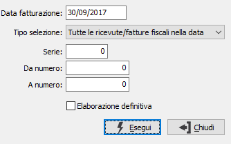

Annullamento fatturazione
La procedura consente di eliminare uno o più documenti in relazione alla selezione effettuata.

DATA FATTURAZIONE: indica la data, presente sui documenti, per cui deve essere effettuata la cancellazione.
TIPO SELEZIONE: definisce il metodo di cancellazione dei documenti: tutte le ricevute/fatture fiscali nella data (sopra riportata); solo le ricevute/fatture fiscali selezionate, questa selezione abilita l'inserimento dei valori nei campi successivi che saranno utilizzati come parametri di cancellazione.
SERIE: indica la serie delle ricevute/fatture fiscali da cancellare.
DA NUMERO: indica da quale numero ricevuta/fattura fiscale si desidera iniziare la cancellazione.
A NUMERO: indica con quale numero ricevuta/fattura fiscale si desidera terminare la cancellazione.
Solo nel caso in cui il documento cancellato corrisponda all'ultima ricevuta/fattura fiscale emessa viene ripristinato anche il protocollo Iva recuperando il numero utilizzato.